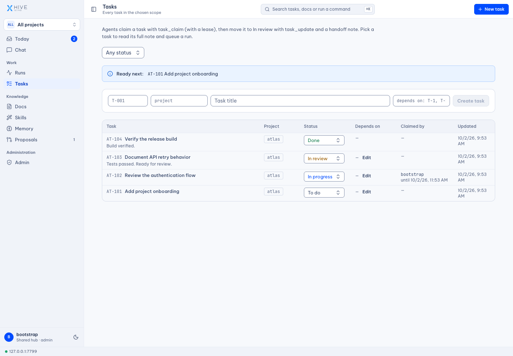
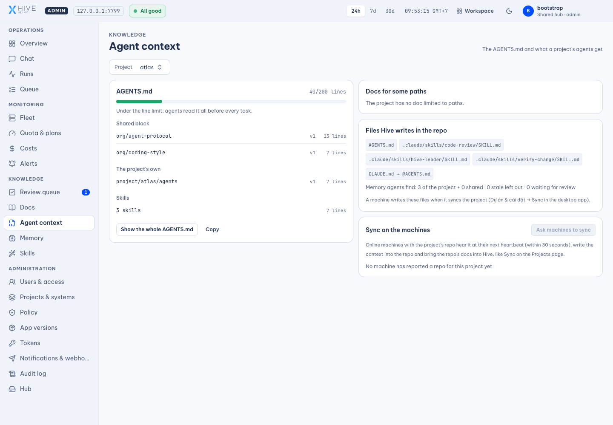
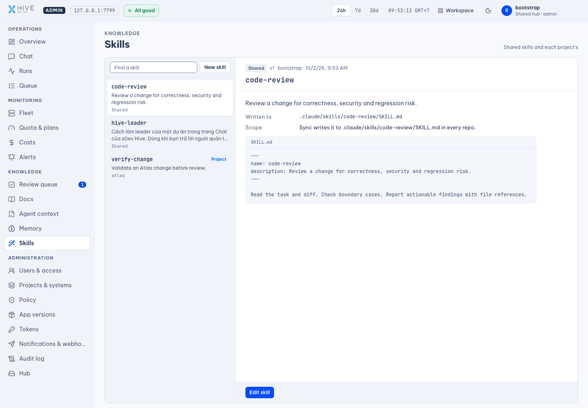
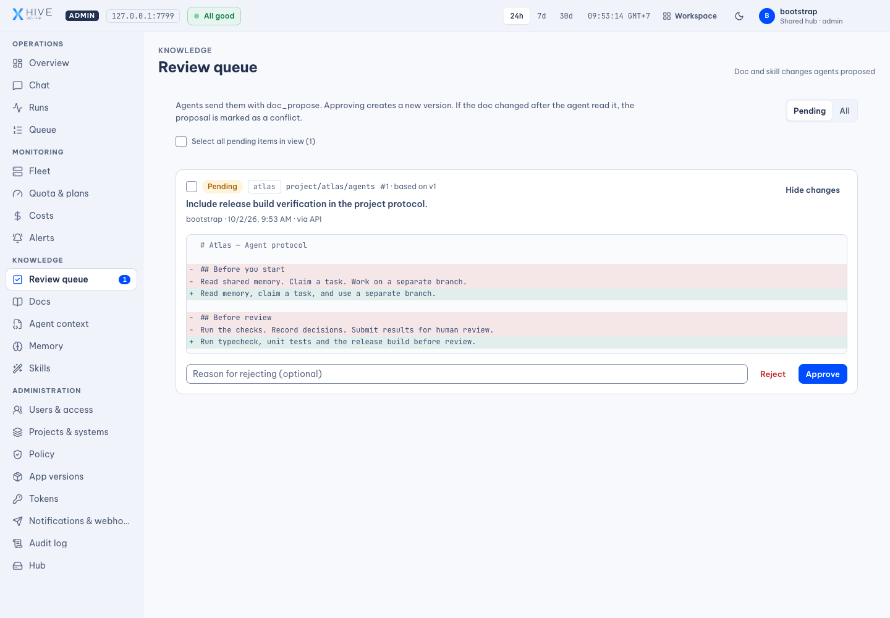
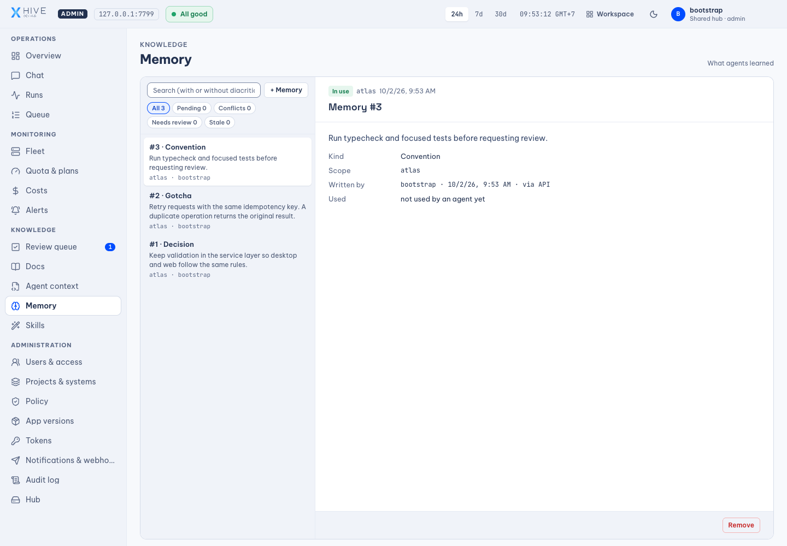
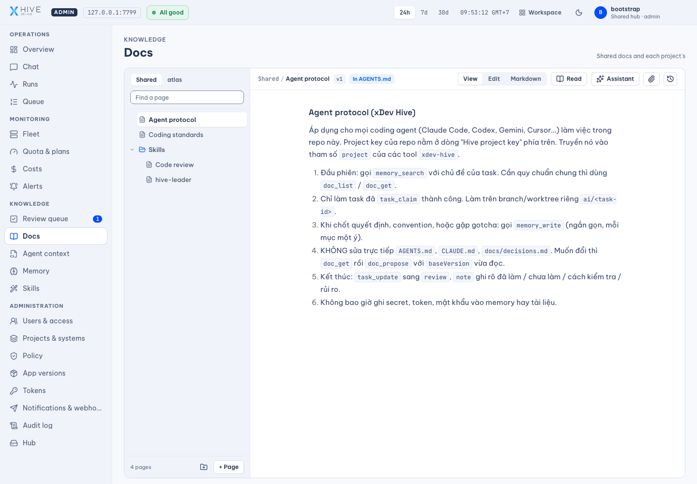

Multiple agents, disconnected work
Tasks need clear ownership, status, and dependencies so teams can track work in progress and results awaiting review.

xDev Hive / AI SDLC
Orchestrate your software development lifecycle with AI. xDev Hive connects your team, coding agents, and repositories: claim tasks, prepare context, track runs, review results, and preserve lessons for the next task.
AI SDLC — the software development lifecycle with AI, with your team making the decisions.
Team and agent orchestration across AI SDLC
MCP
Web hub · Desktop app
Tasks drive the work. Context guides agents. Results are reviewed, and lessons feed the next development cycle.
From AI coding to AI SDLC
Writing code is one part of the work. Teams also need to assign tasks, give agents the right context, track results, and review what comes next. Hive connects those steps with project knowledge, so multiple agents work within a process with clear responsibility.
Tasks need clear ownership, status, and dependencies so teams can track work in progress and results awaiting review.
Agents need relevant standards, skills, and technical decisions before starting. Teams need to inspect that context.
After reviewing a task, preserve, approve, and retrieve decisions and gotchas so the next task builds on what the team learned.
Inside xDev Hive
The real Hive interface running on a separate demo hub. Atlas and the content shown are illustrative data.
Create tasks, declare dependencies, and track progress from todo to completion. Time-limited claims help coordinate work across agents.
Real interface · Atlas demo data
Inspect context documents and distinguish team standards from project instructions before distributing them to repositories.
Real interface · Atlas demo data
Manage team skills and project-specific overrides. Claude Code loads synced repository skills; other agents discover and read them through MCP.
Real interface · Atlas demo data
Inspect the reason and diff before approving document or skill changes. A proposal based on an older document version is flagged as a conflict.
Real interface · Atlas demo data
Keep decisions, conventions, and gotchas. Agents search project memory; administrators approve entries, revisit old knowledge, and review it when referenced files change.
Real interface · Atlas demo data
Organize documents by team and project. Read, edit, version, and inspect changes; sync relevant instructions to repositories so agents can find them when needed.
Real interface · Atlas demo data
Hive uses permissions and review to govern shared documents, skills, and memory. Coding agents run through the CLI, account, and environment you configure. Quotas, sandboxing, and repository integrations depend on those systems.
HIVE / PRODUCT FILM
See how Hive connects tasks, context, coding agents, and review through real demo screens.
Real interface with demo data · Synthetic narration · 4:51
AI SDLC means the software development lifecycle with AI. Writing code is one part of the process. Your team also needs to assign tasks, prepare context, track agents, review results, and preserve lessons. xDev Hive orchestrates these steps, connecting your team, coding agents, and repositories so work moves forward with clear responsibility.
One agent writes code and another reviews it. But who owns the task, and where is the result? When instructions, chat decisions, and work status live apart, the team struggles to continue. Hive connects tasks, runs, and project knowledge. Documents, memory, and skills provide context for agents to do the work and for your team to assess the results.
Hive organizes documents by shared, system, and project scope. Your team can write instructions, standards, and technical decisions, then inspect version history and diffs. This is the real Hive interface, running with illustrative Atlas project data. Documents used as agent context can be synchronized into your repository, keeping instructions close to the code.
Not every instruction belongs in one long file. Hive supports scoped documents and path-specific guidance, so relevant standards can reach the right part of a repository. The context screen lets administrators inspect what agents will read. Desktop synchronization and agent configuration determine how those instructions are distributed to each machine.
Memory preserves what a task teaches: a decision, a convention, or a problem to watch for. Agents search within projects and can use knowledge shared across the team. On the hub, new agent memory is reviewed before other agents use it. Administrators can revisit older entries and inspect knowledge linked to files that have changed.
A useful review procedure should not need to be rewritten for every agent. Hive manages shared team skills and project-specific skills. A project skill overrides a shared skill with the same name. Claude Code can load synchronized skills from the repository, while other agents discover and read skills through MCP. Proposed changes can be reviewed by an administrator.
Work across several agents needs clear state and responsibility. Hive supports tasks with dependencies, progress from todo to completion, and time-limited claims. Agents read the context and claim a task before starting. Updating the result helps the team see what is underway, what is blocked, and what is ready for review.
The desktop app runs coding agents through the CLIs and profiles configured on your machine. The hub shows reported runs, logs, and results. Depending on configuration, the runner can use separate worktrees, switch profiles after quota limits, or compare several candidates. Usage limits and costs still depend on each agent provider and the account you configure.
Agents can propose document and skill updates rather than overwrite shared standards. A permitted reviewer inspects the reason and diff before approving a change. When the original document has changed, Hive flags a conflict so an older proposal does not silently replace newer knowledge. Human reviewers remain part of how team knowledge evolves.
Start with local data in the desktop app. When your team needs a shared workspace, the web hub brings together accounts, project permissions, documents, memory, and reports from multiple machines. SSO, Teams or Slack webhooks, semantic memory search, and external file storage are optional integrations that require configuration for your environment.
Start AI SDLC with real work: a repository, a clear task, and a configured coding agent. Hive coordinates tasks, context, and runs. Your team reviews code results through pull or merge requests and approves proposed knowledge updates. Lessons remain available for the next development cycle. Start on one machine, then expand to a hub for more people and agents.
Read the xDev Hive README to set up the desktop app or hub. Add a repository, prepare standards and skills, connect agents through MCP, and try a task with a clear review process. The screens use demo data and the narration is synthetic. xDev Hive orchestrates AI SDLC, from task to review, with knowledge that grows after each development cycle.
Product capabilities
These capability groups are present in the Hive source. Agent execution and external integrations require the relevant desktop or hub configuration.
Where Hive fits
Use Claude Code on one task, Codex for review, and Gemini CLI on another, with the same project documents, memory, and skills.
Put conventions into shared documents, review agent proposals, and preserve technical decisions with their rationale.
Centralize tasks and knowledge on the hub, and follow runs reported by connected desktop machines.
Record gotchas, link them to files, and revisit them when code changes so lessons remain useful for the next session.
A development cycle with AI
Start with a repository and a clear task. Connect agents to project standards, track the work, and feed reviewed lessons back into project context.
Connect a repository, define the work, and give agents relevant standards, skills, and memory.
Agents claim tasks; the desktop runner executes work in your configured environment. Your team tracks status, logs, and repository-linked results.
Inspect code results through PRs or MRs and review proposed knowledge updates. Approved decisions, skills, and memory guide the next task.
Choose your starting point
01 / Desktop / local
Use the desktop app, add a repository, and configure your coding agents. Keep your data and runs on your own machine.
Read the setup guide02 / Hub / team
Run the web hub, set up accounts and permissions, and connect desktop machines and agents through MCP. Follow the README for Docker setup.
Read the setup guideHive provides knowledge and coordination. Coding work is still performed by agents such as Claude Code, Codex, or Gemini CLI.
The runner uses the CLIs and profiles you configure. Subscription or API usage, quotas, and costs depend on each agent provider.
Yes. The desktop app supports local data. A hub adds shared accounts, documents, memory, and coordination across machines.
In the Hive workflow, agents submit proposals. A permitted reviewer inspects the diff and approves it; stale proposals are flagged as conflicts.
The screenshots show the real Hive frontend on a temporary hub with Atlas demo data. The film is an illustrated product overview with synthetic narration, not an agent or integration benchmark.
Get started with xDev Hive
Find the source, installation requirements, and instructions for running the hub or desktop app in the project README.